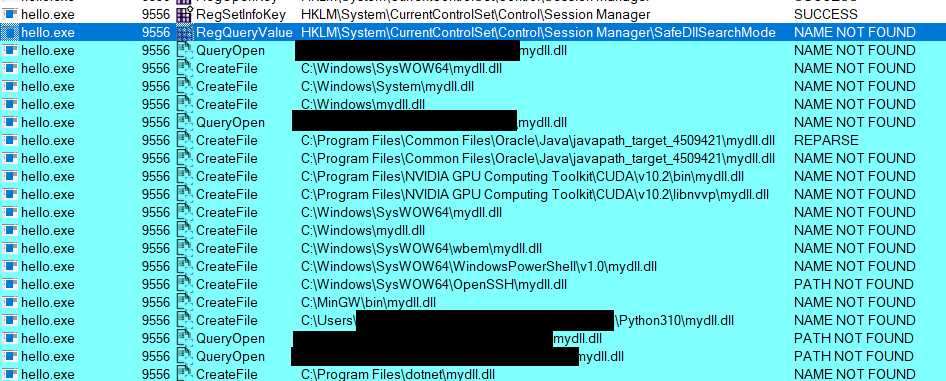
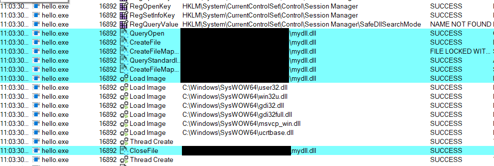
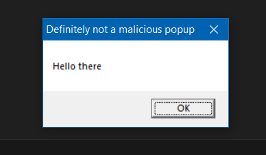

Overview
Hijacking DLLs has been a very common technique for defense evasion, persistence and privilege escalation on Windows machines. I’ll explain and demonstrate two popular techniques used in Windows-targeted malware: DLL Search Order Hijacking and DLL Side-Loading. They are considered to be sub-techniques of the “Hijack Execution Flow” technique (T1574) in the MITRE ATT&CK matrix and they are labeled as T1574.01 and T1574.02 respectively.
On Linux machines, this translates to Dynamic Linker Hijacking (T1574.006) where an attacker would override the LD_PRELOAD environment variable. The same concept applies for macOS machines with the DYLD_INSERT_LIBRARIES environment variable.
DLL Search Order Hijacking
As its name suggests, this sub-technique requires the adversary to make use of the DLL search order mechanism to load malicious libraries carrying the same name as the requested libraries required by a program.
According to Windows documentation, there exists a certain way in which Windows will look for DLLs and it depends on the registry key HKEY_LOCAL_MACHINE\System\CurrentControlSet\Control\Session Manager\SafeDllSearchMode. When its value is set to 1, SafeDllSearchMode will be enabled and the search order will the following:
- DLL Redirection.
- API sets.
- SxS manifest redirection.
- Loaded-module list.
- Known DLLs.
- Windows 11, version 21H2 (10.0; Build 22000), and later. The package dependency graph of the process. This is the application’s package plus any dependencies specified as
<PackageDependency>in the<Dependencies>section of the application’s package manifest. Dependencies are searched in the order they appear in the manifest. - The folder from which the application loaded.
- The system folder. Use the
GetSystemDirectoryfunction to retrieve the path of this folder. - The 16-bit system folder. There’s no function that obtains the path of this folder, but it is searched.
- The Windows folder. Use the
GetWindowsDirectoryfunction to get the path of this folder. - The current folder.
- The directories that are listed in the
PATHenvironment variable. This doesn’t include the per-application path specified by the App Paths registry key. The App Paths key isn’t used when computing the DLL search path.
When SafeDllSearchMode is set to 0 i.e. disabled, the current folder moves from position 11 to position 8.
DLL Side-Loading
According to MITRE ATT&CK’s T1574.002 description:
Rather than just planting the DLL within the search order of a program then waiting for the victim application to be invoked, adversaries may directly side-load their payloads by planting then invoking a legitimate application that executes their payload(s)
Mandiant’s “DLL Side-loading & Hijacking” blog also states that:
Dynamic-link library (DLL) side-loading occurs when Windows Side-by-Side (WinSxS) manifests are not explicit about the characteristics of DLLs being loaded by a program.
Basic Demo
For this demo, we’ll take a simple executable and let it load our own DLL. Let’s start by writing a simple windows program in C (call it hello.c) that loads a dll (credits to ippsec). The program will use the LoadLibraryA() function (A for ANSI strings):
1
2
3
4
5
6
7
8
9
10
11
12
13
14
15
16
// hello.c
#include <stdio.h>
#include <windows.h>
int main(int argc, char **argv){
// Load DLL
HINSTANCE hDll = LoadLibraryA(TEXT("mydll.dll"));
// Check if DLL was loaded
if (hDll != NULL){
printf("DLL Loaded\n");
}else{
printf("DLL Not Found\n");
}
return 0;
}
Next up, we write a DLL (call it mydll.c) with a DllMain() function which will mark the entry point (see Microsoft’s documentation for a detailed example):
1
2
3
4
5
6
7
8
9
10
11
12
13
14
15
16
17
18
19
20
21
22
23
24
// mydll.c
#include <windows.h>
BOOL WINAPI DllMain(
HINSTANCE hinstDLL, // handle to DLL module
DWORD fdwReason, // reason for calling function
LPVOID lpvReserved // reserved
)
{
// Perform actions based on the reason for calling.
switch(fdwReason){
// When dll attaches to process
case DLL_PROCESS_ATTACH:
// Create a message box (windows popup)
MessageBox(
NULL, // Owner window
"Hello there", // Message
"Definitely not a malicious popup", // Title
MB_OK // Type
);
break;
}
return TRUE; // Successful DLL_PROCESS_ATTACH
}
Now, we compile the hello.c with mingw-gcc
1
mingw32-gcc.exe .\hello.c -o hello.exe
If we try running hello.exe, we will get the DLL Not Found output. We can also inspect the DLL search order using ProcessMonitor:
 Figure 1: Process Monitor - Failed DLL Load
We compile the mydll.c with mingw-gcc as well and use the -shared flag:
1
mingw32-gcc.exe .\mydll.c -o mydll.dll -shared
Note that we are placing both the executable and the dll in the same directory
If we try running hello.exe again, we will get the DLL Loaded output. Now the output in ProcessMonitor is looking a lot different than before since the process was able to load the DLL:
 Figure 2: Process Monitor - Successful DLL Load
And here’s the message box:
 Figure 3: Message Box
You might have figured it out by now that we could have placed our DLL anywhere in the directories that we’ve seen in Process Monitor which include the ones in the PATH environment variable.
Mitigation
There are a few ways to avoid such attacks including the following:
- Ensure DLL import paths are hardcorded / Avoid relative paths
- Confirm that the imported DLL exists and that its function are valid
- Use a WinSxS manifest
- Verify the DLL Signature
References
- https://attack.mitre.org/techniques/T1574/001
- https://attack.mitre.org/techniques/T1574/002
- https://www.youtube.com/watch?v=3eROsG_WNpE
- https://owasp.org/www-community/attacks/Binary_planting
- https://www.mandiant.com/resources/blog/abusing-dll-misconfigurations
- https://book.hacktricks.xyz/windows-hardening/windows-local-privilege-escalation/dll-hijacking
- https://learn.microsoft.com/en-us/windows/win32/dlls/dynamic-link-library-search-order#standard-search-order-for-unpackaged-apps
- https://www.mandiant.com/resources/blog/abusing-dll-misconfigurations
- https://posts.specterops.io/automating-dll-hijack-discovery-81c4295904b0
- https://learn.microsoft.com/en-us/windows/win32/dlls/dllmain
- https://www.mandiant.com/sites/default/files/2021-09/rpt-dll-sideloading.pdf